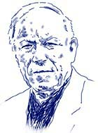
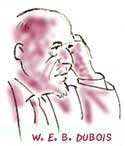
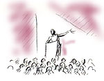
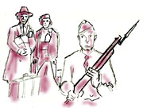
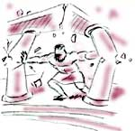

This is an archived copy of History Matters, provided by the Roy Rosenzweig Center for History and New Media. To explore this content in a new interface, visit Who Built America?.


Leon F. Litwack is Alexander F. and May T. Morrison Professor of American History at the University of California, Berkeley, where he has spent almost his entire career, earning a B.A. in 1951 and a Ph.D. in 1958 and teaching since 1964. Litwack’s many publications include North of Slavery: The Free Negro in the Antebellum North (1961), Been in the Storm So Long: The Aftermath of Slavery (winner of both the Pulitzer Prize and National Book Award), and most recently, Trouble in Mind: Black Southerners in the Age of Jim Crow (1998). Litwack has received many honors in recognition of his distinguished and path-breaking scholarship, including the Pulitzer Prize in History, the Francis Parkman Prize, the American Book Award, and election to the presidency of the Organization of American Historians. Perhaps less well-known is that Litwack has also been an enormously popular and influential teacher, who has received two Distinguished Teaching Awards and, as he notes in this interview, has taught more than 30,000 Berkeley undergraduates.|
1.What drew you to history teaching? My interest in history began with the education
imparted by my neighborhood and my immigrant parents. I grew up in Santa Barbara, my
father worked as a gardener, my mother as a dressmaker, and we lived in a rented house
in a working-class neighborhood. Growing up in this environment, I came to be fascinated
by the story of how my parents came to this country from Russia (and ultimately hitchhiked
out to California) and by the experiences of my neighbors, most of them immigrants from Mexico.
My neighborhood, then, exposed me to a diversity of cultures, languages, and histories. I
thought it to be a unique and valuable education. But I found nothing about their experiences
in my courses in social studies and history. The history we were taught in school was largely
the history of Anglo-Saxons and Northern Europeans. It was someone else’s history, not my history,
not my life, not the lives of my parents, friends, and neighbors. If Mexicans appeared at all in
our textbook, it was as picturesque appendages to a Europeanized mainstream. If African-Americans
were mentioned, it was as docile and contented slaves; their history was said to be a history of
submission patiently and passively if not gladly endured. The textbook we read in high school was
no more enlightened than the textbook used in most Ivy League colleges, in which Samuel Eliot Morison
of Harvard and Henry Steele Commager of Columbia said of slavery, “Sambo suffered less than any
other class in the South. Although brought here by force, the incurably optimistic negro soon
became attached to the country and devoted to his ‘white folks.’ ” |
|
 |
A chance meeting in my junior year proved memorable. A friend (a graduate student in history) called and asked me to come over to his house; he said someone wanted to meet me. I was ushered into the living room, and I recognized his guest immediately—it was W.E.B. Du Bois. Of course I was deeply impressed; I had read his books. But why had he singled me out? He wanted, he said, to meet an undergraduate in history. He wanted to know what I was learning about slavery and Reconstruction. My response was in two parts: the textbook (by John D. Hicks) reflected familiar distortions and biases; the course lectures did not, and their content impressed and astonished Du Bois; they revealed new ways of thinking about both slavery and Reconstruction. The person teaching the course was a young assistant professor, Kenneth M. Stampp, who would have a profound impact on my thinking and with whom I would ultimately write my dissertation on free blacks in the antebellum North. |
|
2. When did you start teaching? My first position was at the University of Wisconsin in Madison, where I taught from 1958 to 1964. I returned to Berkeley in 1964. As a visitor, I have also taught at the University of South Carolina, Louisiana State University, and the University of Mississippi, and abroad at universities in Moscow, Beijing, Sydney, and Helsinki. 3. What courses have you taught? I have always taught the survey American history course. In addition, at Wisconsin I taught the Age of Jackson, and at Berkeley the history of African-Americans and race relations. At both places, I also taught undergraduate and graduate seminars. 4. Which are your favorite courses to teach? My “favorite” course is the survey American history course. It is a large course (some 700 students), and for most of the students perhaps the only history course they will take in college. That is the challenge. I have one chance at them, one opportunity to engage them in the study of the past, to force them to see and to feel the past in ways that may be genuinely disturbing, to develop in them an appreciation of the inescapable complexity of human behavior and human relationships, and to underscore how a study of the past may teach as many ironies and ambiguities as it does clear lessons. 5. Could you say more about the format of the course? My understanding is that you also have sections and that you teach one of the sections yourself. Could you talk about how the goals and experience of the sections differ from the lectures? The course meets for fifty-minute lectures three times a week; in addition, students meet in discussion sections for two hours a week, and some four to five films are shown at night during the semester. The purpose of the sections is to discuss the lectures and assigned readings and to understand how they complement, reinforce, or contradict each other. The section is not for purposes of regurgitating lectures or books but to permit students to consider the implications of the materials for understanding American society. Graduate students meet the sections, and from time to time I have taught my own randomly selected section. I also meet with the graduate assistants (there are usually some 18–20 assistants for a course of about 750 students) every week to discuss materials and teaching strategies. I try to visit as many sections as possible, not to monitor or evaluate my assistants but to give students an opportunity to discuss with me as a group any questions they have about the course, including the lectures and readings, and to see me under more informal conditions. Of course I have office hours each week, as many as may be necessary to meet with those who take advantage of the opportunity, and many students come to office hours, sometimes in groups of two, three, or four. 6. Your lectures are famous among generations of Berkeley students. What are your favorites? |
|
My “favorite” lectures no doubt vary from year to year. If I had
to single out a few, I would probably cite “The Legacy of the Civil
War,” "How Free is Free?“ [the emancipation experience], ”Hellhound
on My Trail“ [The Age of Jim Crow], ”American Rebels: The IWW,“
”Civilization of Discontents: Southern California in the 1920s and
1930s,“ "The Age of Violence: World War II,” "The Civil Rights Revolution,“
”The Sixties,“ "Subversive Activities: Nixon, Reagan, Clinton and
the American Presidency,” and the two multi-media presentations —“Nothing to Fear: America and the Great Depression” and “To Look
For America: From Hiroshima to Woodstock.” Those may be “favorites”
but frankly I look forward to every lecture, and the real “favorites”
may be those I have had sufficient time to revise significantly
over the previous year. |
 | |||
|
7. Some people, as you know, are critical of large lectures. What would you say to them? Is it possible to make personal connections with students in such a large course? As an undergraduate at Berkeley, I enrolled in a number of large lecture courses. I also had the opportunity to enroll in a number of small classes and seminars. Although I enjoyed the small classes, I came away from my undergraduate years realizing that several of the large lecture courses in which I never even met the professor had the most profound impact on me. (As an example, I would cite Kenneth Stampp, with whom I took the survey course as well as upper division lecture courses on the Old South, the Civil War, and Reconstruction). Large lectures have never bothered me but I can’t speak for all my students. If you have a large lecture class, it is possible to engage the students (at least most of them) but it requires careful and systematic preparation. Each of my lectures has a beginning and an end, and hopefully students will grasp the overriding theme (if there is one). I don’t know if it is possible to make “personal connections” with 700 students but every class, in my mind, takes on its own personality. I do not see the “audience” as an indistinguishable blur but as individual students. I recognize and greet them out of class (often to their surprise) and treat them as personably as I can from the lecture podium. But I am at the same time a “formal” lecturer. I use prepared notes, as I incorporate a considerable number of quotations and original sources into my lectures. That is simply my style, and I would never argue its superiority over any other style. We have an outstanding teaching department at Berkeley, and no doubt as many teaching styles as there are teachers. I realize that suspicion has often been attached to the “popular” lecturer (it can be a “kiss of death” in some departments), based on the idea that popularity must mean a denigration of the subject or a conscious effort to “entertain” students. I would argue that serious materials can be communicated effectively in an engaging manner, that history can be as dramatic, exciting, and important as the materials we use, without in any way distorting or simplifying the past. 8. That’s a great phrase about making students “feel the past in ways that may be genuinely disturbing.” What are some of the ways you do that? Does it backfire with some students? To make students “feel the past in ways that may be genuinely disturbing” is, in my estimation, simply to
present the American past as something less than an exercise in self-congratulation and nostalgia and a collection of
bland pieties. Intellectual inquiry, it has been said, is of necessity a subversive activity, and intellectuals,
writers, poets, artists, musicians, and teachers are more likely than most to disturb the peace and offend
sensibilities. That is as it should be. What we are trying to do in the classroom is to inculcate students in
the habit of critical thought, and that can be a dangerous addiction. Does it backfire with some students? Of
course. That is often the moment we know we are achieving our objective. I don’t want my students to think the
same way I think or to regurgitate my lectures in their examinations. I want them to think, to consider the
implications of the materials, to understand that history does have consequences. I do not want them to drown
in facts and dates. I want them to feel those facts, to consider the human consequences of the events,
legislation, policies, doctrines, and wars that comprise our history. History is mostly about people and how
they felt about what was happening to them. To compel students to live within the past, to stand in the shoes
of those who came before us, to flesh out and give human meaning to abstractions about democracy, freedom,
liberty and opportunity, to understand the past from the perspective of the men and women who experienced it can be a disturbing experience—but ultimately a rewarding experience. 9. What are the biggest themes that you try to convey in the U.S. history survey course? The study of the American past is a complicated and demanding exercise. It does not lend itself to easy explanations, to simple formulas, themes, or lines on which to hang the historical phenomenon we will be observing during the semester. History is too ambiguous, too elusive, sometimes unfathomable. History, it has been said, is the study of the past in all its splendid messiness. I like the way one of my colleagues, an eminent ancient historian, described his lectures as designed not so much to deliver results as to recount the agonies required to reach them. History usually defies measurement and exactitude and a unifying theme or “organizing principle,” and hence it is difficult to define “the biggest themes” in my course. I want to bring into the historical consciousness of my students men and women ordinarily left outside the framework of the American experience, mostly “ordinary” working-class people who did not leave behind the kinds of journals, records, and correspondence historians rely upon but who nevertheless found ways to communicate their experiences and ideas. I want my students to consider in a historical context the idea that social inequities are neither inevitable nor accidental but reflect the assumptions, beliefs, and policies of certain people who command enormous power; that there are limits to our power as a nation, that no country is exempt from history; that the indispensable strength of America remains the right of dissent, and that few people have cared more deeply about this nation than some of its severest critics; and that we need to be wary of those who in the name of protecting our freedoms would diminish them. History teaches, after all, that it is not the rebels, the iconoclasts, the curious, the dissidents who endanger a democratic society but rather the accepting, the unthinking, the unquestioning, the docile, the obedient, the silent, and the indifferent. 10. What have been the most important influences on changing your lectures over the years? Some of the above “themes” remain constant in the course but the illustrations used to teach those “themes” may be revised. Revisions rest in large part on new scholarship and the opportunity to think about the most effective ways to impart American history. I leave every lecture my own most severe critic. The moment I find myself absolutely satisfied with a lecture may be the moment I choose to leave this course. Some have asked me from time to time, “Why do you spend so much time revising your lectures? Your students, after all, have never heard them.” "Yes,“ I reply, ”but I have." The lectures that change the most are in those areas in which I conduct my research, as I try out my new materials first on my students. Lectures are also revised, as I have indicated above, in accordance with the new scholarship (at least that part of the new scholarship that remains coherent and readable) or a rereading or rethinking of the old scholarship. And I do read carefully my course evaluations at the end of the semester, as I have found my students often to be very perceptive and suggestive critics; at the very least, I learn what works and what does not work. I don’t always follow their advice about readings and even lectures, as sometimes it may not be a matter of what a student prefers as what a student needs. 11. You note the important ways that new scholarship has affected your lectures. Has your teaching also been affected by the changing composition of the student body or by the changing position of the US in the world? In my estimation, the new voices, the new experiences that have been brought to the writing and teaching of history over the past thirty years have transformed profoundly how we think about the past. To overcome cultural illiteracy, we have managed to introduce into our teaching sources experiences previously ignored or repressed by restrictive and unimaginative scholarship—and unimaginative scholars. That is an important change, no more so than the changing composition of the classes I teach at Berkeley—a change dramatically evident as I look out on that sea of faces in the survey course each year. It is still not what it should be but much improved over my student and early teaching years, when most blacks and Latinos appeared on college campuses only as cafeteria workers, janitors, and fraternity and sorority cooks. When affirmative action came to be expanded to include non-whites, it made a significant and positive difference in the makeup of our faculty and students and in the teaching experience. 12. What are the most effective assignments that you use in the survey course? |
|
 |
I believe it is the requirement that each student write an eight-ten page research paper based exclusively on original sources. I want them to explore the library (newspapers, government documents, travel accounts, autobiography, oral histories), not the Internet (I have limited them to four web-sites, one of them the Library of Congress). The topics need to be original, often seeking to answer a specific historical question, and they need to be important and challenging. Let me cite one example: What were the reactions in the African-American community to the forced evacuation and incarceration of Japanese Americans during World War II? Among the students most affected by the research assignment have been those who found themselves handling original manuscripts in the Bancroft Library. |
13. What is your most memorable or rewarding teaching experience? Each class is for me a memorable and rewarding experience, even when it has not reached my expectations. Perhaps most memorable and rewarding are the reactions of students expressed to me at the time (some verbally, some written) or in many instances years or decades later. I often think back to that day in Santa Barbara High School when I sought to influence and hopefully change the way my classmates and teacher thought about slavery and Reconstruction. Some fifty years later, having taught more than 30,000 students at Berkeley, I would like to think my teaching has made some difference in how they conceptualize the past and assess its importance and consequences, and that the materials to which they were exposed helped to deepen their sensibilities and gave them a greater appreciation for the relevance and complexity of our history. Teaching remains for me that challenging, awesome opportunity to make a difference. 14. How do you think teaching has changed over your career? I believe our teaching has changed most dramatically in respect to the resources we employ to impart the past and the lives of the peoples who made up American society. That has required us as teachers to reassess the traditional ways we choose to document the past, a sensitivity to the complexities and varieties of cultural documentation, to the diverse ways in which people have conveyed their thoughts and feelings about matters of daily and far reaching concern to them. In his book Deep Blues, Robert Palmer asks, “How much thought can be hidden in a few short lines of poetry? How much history can be transmitted by pressure on a guitar string? The thought of generations, the history of every human being who’s ever felt the blues come down like showers of rain.” Music (from Joe Hill and Robert Johnson to Bob Dylan and Tupac Shakur), films (for example, Ethnic Notions and Birth of a Nation, Hearts and Minds and Regret to Inform, The Life and Times of Rosie the Riveter, Berkeley in the Sixties, and Freedom On My Mind), and literature (for example, Richard Wright, Thomas Bell, John Dos Passos, Sinclair Lewis, Zora Neale Hurston, Nathaniel West) enable us to probe the inner lives of Americans in ways that the traditional historical text or monograph or lecture cannot, at least not with the same degree of feeling for the complexity, range, and depth of the American experience. 15. What tips would you give to a new history teacher? I would tell a new history teacher that when I taught my first class I felt confident, eager, and enthusiastic. If anything, I may feel less confident today but no less eager, no less enthusiastic. I find it easier to teach than to talk or write about teaching. I have no formulas to offer, no models, few new pedagogical strategies. Whatever instructional techniques we may employ, the key to good teaching remains the commitment, the spirit, the enthusiasm, the passion, the sensitivity, and, yes, the doubts and skepticism, we bring to the classroom. We need to be open to our students‘ queries and ideas, and we often need to be patient listeners. No matter what subject we teach, we need to be as concerned with our students’ written expression as with the quality of their oral participation. We are all teachers of language, and helping a student to think and write clearly is a responsibility all of us assume. That responsibility takes on even greater importance when a proliferating jargon in the academy threatens the very essence of communication—the ability to be understood. 16. What, in your view, constitutes good teaching? |
|
Teaching is more than imparting information. It is a
process by which we seek to stir and challenge the intellect,
to shake it up. The best teaching deepens sensibilities
and develops insight and imagination, often by asking
the most uncomfortable questions. The amount of information
imparted in the classroom is less important than the dialogue
we begin with our students, in which we engage them in
that elusive pursuit of the truth, wherever it may lead,
in which, as Mark Twain once suggested in defining education,
we guide them along “the path from cocky ignorance to
miserable uncertainty.” The excitement in teaching comes
from forcing our students to rethink their assumptions,
from making them discontented about what they do not know,
from working with them to test, even to undermine old
(and new) dogmas, creeds, and values. The excitement comes
when the teacher is able to bring about a shift of consciousness,
a shift that may not be immediately felt. That is why
a teacher’s impact on the classroom defies any precise
measurement or objective evaluation. |
 | |||
| The life of the mind, imagination, and critical thinking remain the key to our survival. The value of the teacher often rests on his or her willingness to be a disturber of the peace, to afflict the comfortable, the complacent, and the indifferent. In the classroom, the beginning of wisdom for our students is when they are exposed to alternate viewpoints, to the full range of possibilities in the human experience, when they learn to be skeptical of delivered truths and belief systems. And it is when our students come to appreciate that Western civilization and Western culture and the Judeo-Christian tradition are not the sum total of human wisdom. |
Interview conducted by Roy Rosenzweig; completed in January 2001.